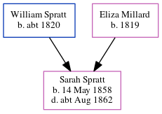

Sarah Jane Spratt 1858 - c1862
[ Home ] | [ Calendar ] | [ Surnames Index ] | [ Census Index ] | [ Family History ]The child of William Spratt (a police man) and Eliza Millard, Sarah Spratt, the first cousin three-times-removed on the father's side of Nigel Horne, was born in Marylebone, London, England on May 14, 1858 and baptized there on Jun 20, 1858. On Apr 7, 1861, she was living at Little Chesterfield Street in Marylebone2.
She died c. Aug 1862 in Marylebone1.
Parents
- William was born c. 1820
- Eliza was born in 1819
Citations
- England & Wales deaths 1837-2007 - Findmypast
- 1861 England, Wales & Scotland Census - Findmypast (was age 3 and the daughter of the head of the household)
Media
England Births & Baptisms 1538-1975 - R_948865404
England & Wales deaths 1837-2007 - BMD/D/1862/3/GU/001258/017
Family Tree
Generated by ged2site. Last updated on Jun 11, 2024